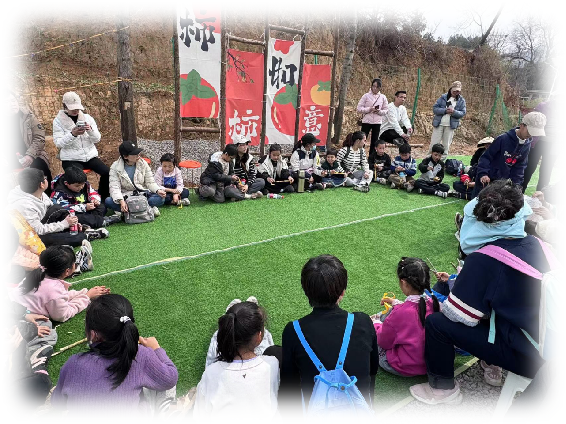

柿子文化节是荥想柿成一年一度的文化盛会，旨在传承柿子文化，展示创新成果，促进文化交流。在这里，传统与现代完美融合，让更多人了解和感受柿子文化的魅力。
文化展示
文化节期间将展示：
- 柿子种植历史
- 传统加工工艺
- 文化传承故事
- 现代创新成果
特色活动
文化节包含丰富多彩的活动：
- 柿子美食节：品尝各类柿子美食
- 工艺展示：展示传统工艺制作
- 文化讲座：了解柿子文化历史
- 互动体验：参与各类文化活动
创新展示
展示柿子产业的创新发展：
- 新产品展示：创新柿子产品
- 技术交流：分享种植技术
- 产业对接：促进产业合作
- 文化创意：展示文创产品
活动亮点
文化节特别安排：
- 开幕式表演：展示地方特色
- 文化展览：展示历史文物
- 互动体验：参与文化体验
- 闭幕式晚会：总结活动成果
参与方式
欢迎各界人士参与：
- 普通游客：参观体验
- 文化爱好者：参与活动
- 产业从业者：交流合作
- 媒体朋友：宣传报道
温馨提示
为了您的参与更加愉快，请注意：
- 提前预约参观
- 遵守活动秩序
- 注意安全事项
- 保护场地环境
通过这次文化节，我们希望能够让更多人了解柿子文化的魅力，感受传统文化的精髓。同时，我们也期待能够与更多文化爱好者分享柿子文化的独特魅力。
欢迎您参与这次盛大的柿子文化节，让我们一起传承文化，创新发展。